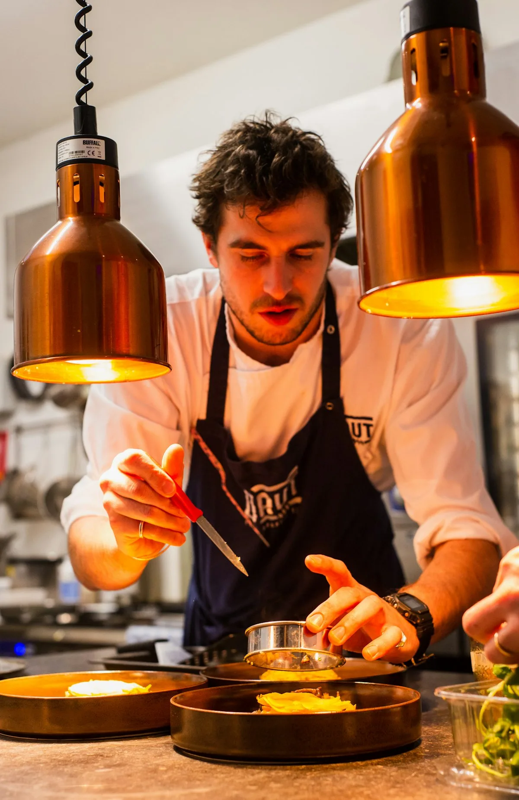

Voldur exists to prove that craft at the absolute limit of human environment produces results unavailable anywhere else. We do not romanticize altitude — we harness its physics. The cold, the thin air, the raw ore: these are tools as real as hammer and anvil.

Erik Voldur was born in Bergen, Norway, apprenticed to a shipbuilder's forge at sixteen. After years in European forges, he moved to Switzerland seeking the ore deposits described in medieval accounts of alpine ironwork — and found them.
In 1987, he established the workshop at Grindelwald at 2,400 meters, a location that seemed irrational to his contemporaries. The first season nearly killed him. By the third season, he had discovered the glacial quench — the technique that would define Voldur's work for decades.
He passed the master smith title to his three apprentices in 2018, but continues to consult on exceptional commissions.
Every piece of ore is documented from the moment of extraction. We maintain a full chain of custody from vein to blade — not for marketing, but because the material's origin is inseparable from its performance.
We refuse the modern compromise of dividing craft between specialists. One maker, one blade, from first strike to final edge. The quality of attention this demands is the quality of result it produces.
We build for multiple lifetimes. Every Voldur commission is accompanied by a maintenance protocol and lifetime service guarantee. A blade should outlast its first owner by generations.
Erik Voldur establishes the forge at 2,400 meters after discovering high-grade iron ore deposits in the surrounding alpine terrain. The location was considered eccentric; the results proved otherwise.
Voldur receives the Swiss Blade Artisan Award for the first time, citing the extraordinary hardness of the Nordval series and the novel glacial quench process.
A blade accidentally dropped into glacial meltwater during quench displays unprecedented edge hardness. Erik Voldur spends two years systematically developing this into a repeatable process.
Commissioned to produce a 12-piece presentation set for the Swedish Royal House. The commission marks Voldur's entry into the international collector market.
After three decades, Erik Voldur formally grants master smith status to his three apprentices. The tradition of single-hand craft continues in three parallel workshops within the forge.
Voldur receives the Swiss Blade Artisan Award for the sixth consecutive time — unprecedented in the award's history. Current wait list: 18 months.